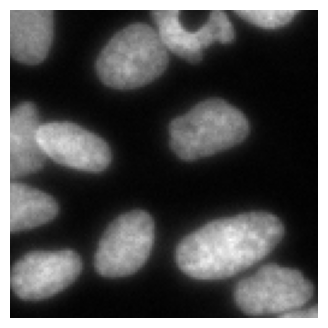
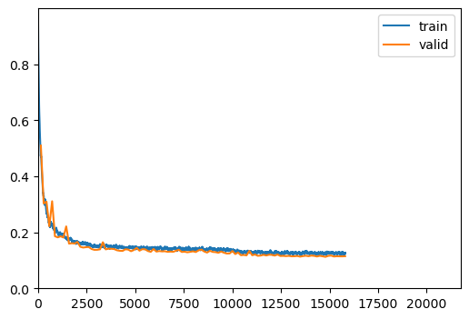
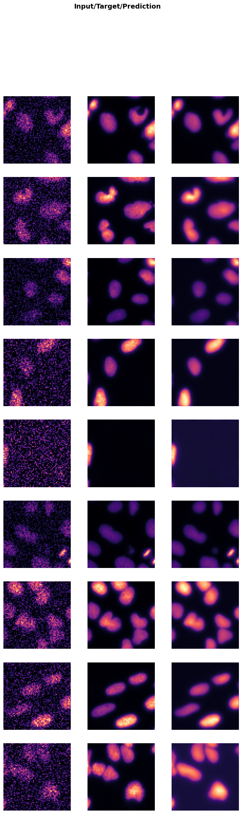

from bioMONAI.data import *
from bioMONAI.transforms import *
from bioMONAI.core import *
from bioMONAI.core import Path
from bioMONAI.data import get_image_files, get_target, RandomSplitter
from bioMONAI.nets import BasicUNet, DynUNet
from bioMONAI.losses import *
from bioMONAI.losses import SSIMLoss
from bioMONAI.metrics import *
from bioMONAI.datasets import download_fileTutorial Denoising
denoising
import warnings
warnings.filterwarnings("ignore")device = get_device()
print(device)cudaDownload Data
# Specify the directory where you want to save the downloaded files
output_directory = "../_data/U2OS"
# Define the base URL for the dataset
url = 'http://csbdeep.bioimagecomputing.com/example_data/snr_7_binning_2.zip'
# Download only the first two images
# download_file(url, output_directory, extract=True)Create Dataloader
X_path = '../_data/U2OS/128a57f165e1044e34d9a6ef46e66b3c-snr_7_binning_2.zip.unzip/train/low/'
y_path = '../_data/U2OS/128a57f165e1044e34d9a6ef46e66b3c-snr_7_binning_2.zip.unzip/train/GT'
bs = 16
patch_size = 128
itemTfms = [ScaleIntensityPercentiles(), RandCropND(patch_size), RandRot90(prob=.75), RandFlip(prob=0.5)]
batchTfms = []
get_target_fn = get_target(y_path, same_filename=True)
data = BioDataLoaders.from_folder(
X_path,
get_target_fn,
valid_pct=0.05,
seed=42,
item_tfms=itemTfms,
batch_tfms=batchTfms,
show_summary=True,
bs = bs,
)
# print length of training and validation datasets
print('train images:', len(data.train_ds.items), '\nvalidation images:', len(data.valid_ds.items))Setting-up type transforms pipelines
Collecting items from ../_data/U2OS/128a57f165e1044e34d9a6ef46e66b3c-snr_7_binning_2.zip.unzip/train/low/
Found 2457 items
2 datasets of sizes 2335,122
Setting up Pipeline: BioImage.create -> Tensor2BioImage -- {}
Setting up Pipeline: get_target.<locals>.generate_target_path -> BioImage.create -> Tensor2BioImage -- {}
Building one sample
Pipeline: BioImage.create -> Tensor2BioImage -- {}
starting from
../_data/U2OS/128a57f165e1044e34d9a6ef46e66b3c-snr_7_binning_2.zip.unzip/train/low/img_1596.tif
applying BioImage.create gives
BioImage of size 1x256x256
applying Tensor2BioImage -- {} gives
BioImage of size 1x256x256
Pipeline: get_target.<locals>.generate_target_path -> BioImage.create -> Tensor2BioImage -- {}
starting from
../_data/U2OS/128a57f165e1044e34d9a6ef46e66b3c-snr_7_binning_2.zip.unzip/train/low/img_1596.tif
applying get_target.<locals>.generate_target_path gives
../_data/U2OS/128a57f165e1044e34d9a6ef46e66b3c-snr_7_binning_2.zip.unzip/train/GT/img_1596.tif
applying BioImage.create gives
BioImage of size 1x256x256
applying Tensor2BioImage -- {} gives
BioImage of size 1x256x256
Final sample: (BioImage([[[14., 14., 12., ..., 13., 13., 13.],
[14., 14., 12., ..., 13., 13., 13.],
[ 7., 7., 0., ..., 0., 23., 23.],
...,
[ 7., 7., 0., ..., 0., 10., 10.],
[ 0., 0., 21., ..., 0., 8., 8.],
[ 0., 0., 21., ..., 0., 8., 8.]]]), BioImage([[[142., 135., 130., ..., 251., 239., 220.],
[132., 128., 127., ..., 253., 224., 232.],
[132., 130., 140., ..., 243., 250., 229.],
...,
[156., 163., 180., ..., 132., 141., 132.],
[156., 166., 179., ..., 136., 132., 143.],
[161., 165., 178., ..., 130., 142., 131.]]]))
Collecting items from ../_data/U2OS/128a57f165e1044e34d9a6ef46e66b3c-snr_7_binning_2.zip.unzip/train/low/
Found 2457 items
2 datasets of sizes 2335,122
Setting up Pipeline: BioImage.create -> Tensor2BioImage -- {}
Setting up Pipeline: get_target.<locals>.generate_target_path -> BioImage.create -> Tensor2BioImage -- {}
Setting up after_item: Pipeline: ScaleIntensityPercentiles -> RandCropND -- {'size': (128, 128, 128), 'lazy': False, 'p': 1.0} -> RandRot90 -- {'prob': 0.75, 'max_k': 3, 'spatial_axes': (0, 1), 'ndim': 2, 'lazy': False, 'p': 1.0} -> RandFlip -- {'prob': 0.5, 'spatial_axis': None, 'ndim': 2, 'lazy': False, 'p': 1.0} -> ToTensor
Setting up before_batch: Pipeline:
Setting up after_batch: Pipeline:
Building one batch
Applying item_tfms to the first sample:
Pipeline: ScaleIntensityPercentiles -> RandCropND -- {'size': (128, 128, 128), 'lazy': False, 'p': 1.0} -> RandRot90 -- {'prob': 0.75, 'max_k': 3, 'spatial_axes': (0, 1), 'ndim': 2, 'lazy': False, 'p': 1.0} -> RandFlip -- {'prob': 0.5, 'spatial_axis': None, 'ndim': 2, 'lazy': False, 'p': 1.0} -> ToTensor
starting from
(BioImage of size 1x256x256, BioImage of size 1x256x256)
applying ScaleIntensityPercentiles gives
(BioImage of size 1x256x256, BioImage of size 1x256x256)
applying RandCropND -- {'size': (128, 128, 128), 'lazy': False, 'p': 1.0} gives
(BioImage of size 1x128x128, BioImage of size 1x128x128)
applying RandRot90 -- {'prob': 0.75, 'max_k': 3, 'spatial_axes': (0, 1), 'ndim': 2, 'lazy': False, 'p': 1.0} gives
(BioImage of size 1x128x128, BioImage of size 1x128x128)
applying RandFlip -- {'prob': 0.5, 'spatial_axis': None, 'ndim': 2, 'lazy': False, 'p': 1.0} gives
(BioImage of size 1x128x128, BioImage of size 1x128x128)
applying ToTensor gives
(BioImage of size 1x128x128, BioImage of size 1x128x128)
Adding the next 15 samples
No before_batch transform to apply
Collating items in a batch
No batch_tfms to apply
None
train images: 2335
validation images: 122data.show_batch(max_n=1)
Load and train a 2D model
# from bioMONAI.nets import Deeplab, DeeplabConfig
from monai.networks.nets import BasicUNet, AttentionUnet, DynUNet, UNet, BasicUNet# model = UNet(spatial_dims=2, in_channels=1, out_channels=1, channels=(16, 32, 64, 128, 256),strides=(2, 2, 2, 2), num_res_units=2).model
# model = AttentionUnet(spatial_dims=2, in_channels=1, out_channels=1, channels=(16, 32, 64),strides=(1, 1))
# model = DynUNet(spatial_dims=2, in_channels=1, out_channels=1, strides=(1, 2, 2),kernel_size=(3, 3, 3), upsample_kernel_size=(2, 2), res_block=True) # it tends to create hot pixels
# model = BasicUNet(spatial_dims=3, in_channels=1, out_channels=1)
# config_2d = DeeplabConfig(
# dimensions=2,
# in_channels=1,
# out_channels=1,
# backbone="resnet10",
# )
# model = Deeplab(config_2d)model = UNet(spatial_dims=2, in_channels=1, out_channels=1, channels=(32, 64, 128, 256),strides=(1, 2, 2), num_res_units=2)
# model = DynUNet(spatial_dims=2, in_channels=1, out_channels=1, strides=(1, 2, 2),kernel_size=(3, 3, 3), upsample_kernel_size=(2, 2), res_block=True)
loss = CombinedLoss(alpha=0.00001, beta=0.00001)
metrics = [MSEMetric(), SSIMMetric(2)]
trainer = fastTrainer(data, model, loss_fn=loss, metrics=metrics, show_summary=False)trainer.fit_flat_cos(150)
72.67% [109/150 08:24<03:09]
| epoch | train_loss | valid_loss | MSE | SSIM | time |
|---|---|---|---|---|---|
| 0 | 0.477725 | 0.509568 | 1.349756 | 0.490439 | 00:04 |
| 1 | 0.330525 | 0.303147 | 1.510545 | 0.696866 | 00:04 |
| 2 | 0.268879 | 0.309445 | 1.575054 | 0.690568 | 00:04 |
| 3 | 0.227137 | 0.221887 | 1.502905 | 0.778127 | 00:04 |
| 4 | 0.228147 | 0.310885 | 1.578870 | 0.689128 | 00:05 |
| 5 | 0.202863 | 0.186027 | 1.508807 | 0.813988 | 00:05 |
| 6 | 0.200529 | 0.182069 | 1.502204 | 0.817945 | 00:05 |
| 7 | 0.191378 | 0.185810 | 1.434534 | 0.814204 | 00:05 |
| 8 | 0.186754 | 0.181515 | 1.456065 | 0.818498 | 00:04 |
| 9 | 0.178258 | 0.221215 | 1.506446 | 0.778799 | 00:04 |
| 10 | 0.171782 | 0.159755 | 1.539510 | 0.840260 | 00:04 |
| 11 | 0.169419 | 0.161138 | 1.506985 | 0.838876 | 00:04 |
| 12 | 0.167570 | 0.159987 | 1.543202 | 0.840028 | 00:04 |
| 13 | 0.162999 | 0.165677 | 1.566105 | 0.834337 | 00:04 |
| 14 | 0.160084 | 0.148379 | 1.473467 | 0.851635 | 00:04 |
| 15 | 0.163589 | 0.145635 | 1.440599 | 0.854378 | 00:04 |
| 16 | 0.159731 | 0.147019 | 1.417458 | 0.852994 | 00:04 |
| 17 | 0.154448 | 0.147606 | 1.239220 | 0.852405 | 00:04 |
| 18 | 0.153798 | 0.140495 | 1.124807 | 0.859515 | 00:04 |
| 19 | 0.153677 | 0.137454 | 1.023344 | 0.862555 | 00:04 |
| 20 | 0.151759 | 0.137636 | 0.983189 | 0.862373 | 00:04 |
| 21 | 0.157222 | 0.139282 | 0.971158 | 0.860727 | 00:04 |
| 22 | 0.154725 | 0.164617 | 1.008200 | 0.835392 | 00:04 |
| 23 | 0.149877 | 0.139116 | 0.912858 | 0.860892 | 00:04 |
| 24 | 0.148044 | 0.141430 | 0.909280 | 0.858578 | 00:04 |
| 25 | 0.147189 | 0.141185 | 0.948826 | 0.858823 | 00:04 |
| 26 | 0.151544 | 0.140239 | 0.851625 | 0.859768 | 00:04 |
| 27 | 0.145857 | 0.135933 | 0.867641 | 0.864074 | 00:04 |
| 28 | 0.149335 | 0.134148 | 0.844616 | 0.865860 | 00:04 |
| 29 | 0.144974 | 0.133680 | 0.818304 | 0.866327 | 00:04 |
| 30 | 0.146734 | 0.139378 | 0.815270 | 0.860628 | 00:04 |
| 31 | 0.147358 | 0.138404 | 0.787358 | 0.861603 | 00:04 |
| 32 | 0.145650 | 0.132569 | 0.775710 | 0.867437 | 00:04 |
| 33 | 0.143162 | 0.136826 | 0.772373 | 0.863181 | 00:04 |
| 34 | 0.144302 | 0.144350 | 0.785051 | 0.855656 | 00:04 |
| 35 | 0.143444 | 0.134449 | 0.727884 | 0.865557 | 00:04 |
| 36 | 0.144265 | 0.139792 | 0.750708 | 0.860214 | 00:04 |
| 37 | 0.143067 | 0.139342 | 0.735922 | 0.860664 | 00:04 |
| 38 | 0.140936 | 0.133160 | 0.702877 | 0.866845 | 00:04 |
| 39 | 0.144203 | 0.130410 | 0.695776 | 0.869595 | 00:04 |
| 40 | 0.139932 | 0.140502 | 0.695950 | 0.859503 | 00:05 |
| 41 | 0.141111 | 0.131302 | 0.669275 | 0.868703 | 00:04 |
| 42 | 0.143097 | 0.133118 | 0.681326 | 0.866888 | 00:04 |
| 43 | 0.136491 | 0.132033 | 0.641355 | 0.867972 | 00:04 |
| 44 | 0.146102 | 0.132488 | 0.626319 | 0.867516 | 00:04 |
| 45 | 0.141848 | 0.130373 | 0.627461 | 0.869631 | 00:04 |
| 46 | 0.141346 | 0.131211 | 0.614247 | 0.868793 | 00:04 |
| 47 | 0.143634 | 0.130594 | 0.598287 | 0.869411 | 00:04 |
| 48 | 0.138610 | 0.134296 | 0.602039 | 0.865709 | 00:04 |
| 49 | 0.145341 | 0.137646 | 0.590825 | 0.862358 | 00:04 |
| 50 | 0.139209 | 0.129969 | 0.555431 | 0.870035 | 00:04 |
| 51 | 0.141551 | 0.130858 | 0.551176 | 0.869146 | 00:04 |
| 52 | 0.139392 | 0.128768 | 0.546601 | 0.871236 | 00:04 |
| 53 | 0.136950 | 0.130348 | 0.524488 | 0.869656 | 00:04 |
| 54 | 0.142669 | 0.132124 | 0.515921 | 0.867879 | 00:04 |
| 55 | 0.142493 | 0.129645 | 0.486220 | 0.870358 | 00:04 |
| 56 | 0.142335 | 0.135812 | 0.485011 | 0.864191 | 00:04 |
| 57 | 0.141541 | 0.138248 | 0.478690 | 0.861755 | 00:04 |
| 58 | 0.136767 | 0.131345 | 0.446758 | 0.868658 | 00:05 |
| 59 | 0.141551 | 0.127706 | 0.434687 | 0.872296 | 00:04 |
| 60 | 0.143475 | 0.134023 | 0.427761 | 0.865979 | 00:04 |
| 61 | 0.138414 | 0.130092 | 0.398872 | 0.869911 | 00:04 |
| 62 | 0.137474 | 0.129291 | 0.379834 | 0.870711 | 00:04 |
| 63 | 0.141663 | 0.126987 | 0.364015 | 0.873015 | 00:04 |
| 64 | 0.141482 | 0.131386 | 0.343215 | 0.868615 | 00:04 |
| 65 | 0.141786 | 0.127125 | 0.322757 | 0.872877 | 00:04 |
| 66 | 0.140845 | 0.124361 | 0.295319 | 0.875640 | 00:04 |
| 67 | 0.138846 | 0.124566 | 0.273407 | 0.875434 | 00:04 |
| 68 | 0.135607 | 0.133269 | 0.247023 | 0.866732 | 00:04 |
| 69 | 0.134160 | 0.122411 | 0.216283 | 0.877589 | 00:04 |
| 70 | 0.132437 | 0.128005 | 0.218444 | 0.871995 | 00:04 |
| 71 | 0.129475 | 0.118237 | 0.222501 | 0.881763 | 00:04 |
| 72 | 0.128959 | 0.119384 | 0.211263 | 0.880616 | 00:04 |
| 73 | 0.125583 | 0.117750 | 0.210514 | 0.882250 | 00:04 |
| 74 | 0.127623 | 0.133813 | 0.227597 | 0.866188 | 00:04 |
| 75 | 0.125901 | 0.118184 | 0.204655 | 0.881816 | 00:04 |
| 76 | 0.131610 | 0.120868 | 0.213532 | 0.879133 | 00:04 |
| 77 | 0.131351 | 0.116253 | 0.205385 | 0.883747 | 00:04 |
| 78 | 0.127085 | 0.117121 | 0.205211 | 0.882879 | 00:04 |
| 79 | 0.125708 | 0.119862 | 0.198806 | 0.880138 | 00:04 |
| 80 | 0.128296 | 0.117461 | 0.209551 | 0.882539 | 00:04 |
| 81 | 0.129173 | 0.120073 | 0.211196 | 0.879927 | 00:04 |
| 82 | 0.124447 | 0.119644 | 0.200806 | 0.880356 | 00:04 |
| 83 | 0.130684 | 0.116957 | 0.195538 | 0.883043 | 00:04 |
| 84 | 0.125637 | 0.120808 | 0.193646 | 0.879192 | 00:04 |
| 85 | 0.123957 | 0.115541 | 0.198913 | 0.884459 | 00:04 |
| 86 | 0.127177 | 0.115988 | 0.188882 | 0.884012 | 00:04 |
| 87 | 0.128621 | 0.115108 | 0.202063 | 0.884892 | 00:04 |
| 88 | 0.123281 | 0.115995 | 0.209509 | 0.884005 | 00:04 |
| 89 | 0.124379 | 0.114434 | 0.213065 | 0.885566 | 00:04 |
| 90 | 0.124863 | 0.114640 | 0.209430 | 0.885360 | 00:04 |
| 91 | 0.124769 | 0.115667 | 0.224042 | 0.884333 | 00:04 |
| 92 | 0.123805 | 0.113240 | 0.214025 | 0.886760 | 00:04 |
| 93 | 0.131715 | 0.115048 | 0.220955 | 0.884952 | 00:04 |
| 94 | 0.128770 | 0.116503 | 0.232283 | 0.883497 | 00:04 |
| 95 | 0.125380 | 0.114738 | 0.217895 | 0.885262 | 00:04 |
| 96 | 0.126224 | 0.116970 | 0.233146 | 0.883030 | 00:04 |
| 97 | 0.124824 | 0.115994 | 0.223292 | 0.884007 | 00:04 |
| 98 | 0.126373 | 0.113791 | 0.227850 | 0.886209 | 00:04 |
| 99 | 0.126676 | 0.116182 | 0.234397 | 0.883819 | 00:04 |
| 100 | 0.125193 | 0.114489 | 0.234507 | 0.885511 | 00:04 |
| 101 | 0.127689 | 0.112517 | 0.232160 | 0.887484 | 00:04 |
| 102 | 0.127528 | 0.115991 | 0.233791 | 0.884009 | 00:04 |
| 103 | 0.124806 | 0.117058 | 0.236848 | 0.882943 | 00:04 |
| 104 | 0.120776 | 0.113780 | 0.236745 | 0.886221 | 00:04 |
| 105 | 0.123383 | 0.114609 | 0.238864 | 0.885392 | 00:04 |
| 106 | 0.123713 | 0.114370 | 0.238964 | 0.885631 | 00:04 |
| 107 | 0.125378 | 0.114271 | 0.235241 | 0.885729 | 00:04 |
| 108 | 0.125693 | 0.114750 | 0.250618 | 0.885251 | 00:04 |
66.21% [96/145 00:02<00:01 0.1263]

ERROR: Unexpected segmentation fault encountered in worker.
RuntimeError: Exception occured in `ProgressCallback` when calling event `after_batch`:
DataLoader worker (pid 631689) is killed by signal: Segmentation fault. 
trainer.show_results(cmap='magma')
# trainer.save('tmp-model')Test data
Evaluate the performance of the selected model on unseen data. It’s important to not touch this data until you have fine tuned your model to get an unbiased evaluation!